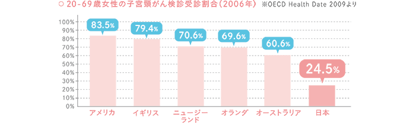
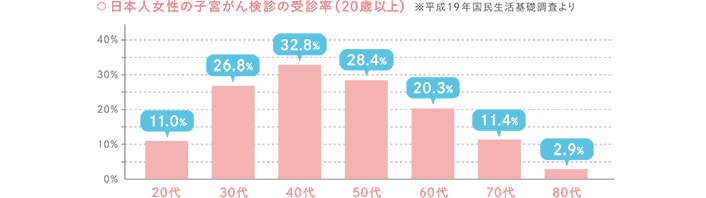
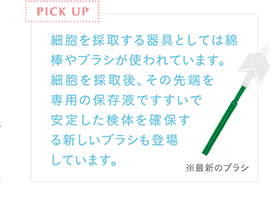
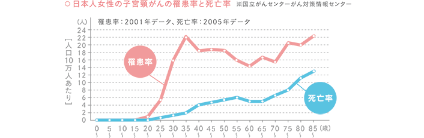
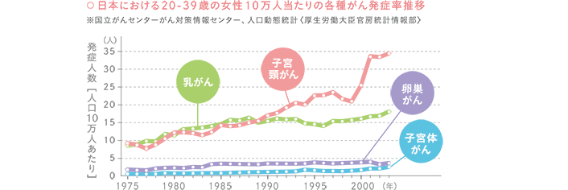

がん検診の国際比較を見ても、日本の乳がん検診、子宮頸がん検診は、OECD（経済協力開発機構）加盟国30カ国の中で最低レベルに位置しています。欧米の検診受診率が70％以上であるのに対し、日本は20〜30%ととても受診率が低いのが現状です。例えば、米国では子宮頸がん検診の場合、83・5％の女性が検診を受診しているのに対して、日本では24・5％にとどまっています。特に、20歳代の女性で子宮頸がん検診を受診しているのは11％という極めて低い状況です。


 検診では、問診で身体の状況確認したあと内診で子宮の入り口の細胞を採取します。最新の検診方法は、細胞の異常な変化を調べる「細胞診」とHPV（ヒトパピローマウイルス）の感染を調べる「HPV検査」を同時に受ける「併用検診」です。2つの検査を組み合わせることで、より正確な検査結果が得られます。また最近では、ブラシで採取された細胞を専用の保存液ですすいで回収する「液状化検体細胞診」という方法が注目されています。
-
・子宮頸がんとは、子宮の入り口にできる「がん」です。
-
・子宮頸がんは20～30歳代に増えています。
-
・日本では一年に約10,000人が発症して、毎日10人ほどが亡くなっています。
-
・初期段階では自覚症状がほとんどなく、症状が表れてからの発見では子宮の摘出やいのちに関わる場合が多くあります。
-
・発症原因のほとんどがSEXによるHPV（ヒトパピローマウイルス）の感染によるものです。
-
・たったひとりの性経験であってもウイルスに感染する可能性があります。
-
・80％の女性が人生で一度は感染しています。
-
・ウイルス感染後、1,000人に1人の割合で、5年〜10年かけてがんに変化していきます。
-
・定期的な検診と予防ワクチンの接種によりほぼ100%は予防することができます。
-
・検診では、がん細胞に変化している状態を見つけることができます。
-
・検診率が100％になれば、子宮頸がんによる死亡は約70％減少するといわれています。
-
・予防ワクチンは10歳〜45歳の女性に推奨されています。
-
・ワクチン接種をした場合、ウイルス感染の約70%を防ぐことができます。


監修：長谷川壽彦・木口一成・伊藤良彌／公益財団法人東京都予防医学協会